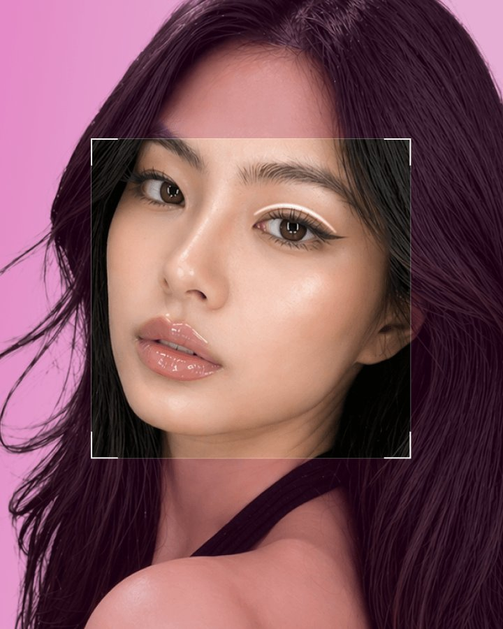

Eyes that turn heads for their beauty

No loosening, no scarring
Solved with two threads

Dual-layer treatment for maximum stability

Creates a defined, clear eye shape

Natural, beautiful eyes that suit your face.

Remove under-eye bags and dark circles, restore a youthful lower-eyelid roll, and create a brighter, lovelier look.

Find the cause of the failure
Leave the frustration of a failed procedure behind.

Say goodbye to an unnatural eye shape.
A natural, slender lash line


 MD, Kosin University College of MedicineBoard Member Appointment, Busan-Gyeongnam Chapter, Korean Association of Plastic SurgeonsFull Member, Korean Association of Aesthetic MedicineMedical Achievement Certificate, Cambridge International Certification CenterHonorary Doctorate, Woosuk UniversityBest Paper AwardLifetime Achievement Award, World Congress of Arts and Sciences (2011)Speaker Certification, International Academic ConferenceInternational Hippocrates Medical Achievement AwardAcademic Honors
MD, Kosin University College of MedicineBoard Member Appointment, Busan-Gyeongnam Chapter, Korean Association of Plastic SurgeonsFull Member, Korean Association of Aesthetic MedicineMedical Achievement Certificate, Cambridge International Certification CenterHonorary Doctorate, Woosuk UniversityBest Paper AwardLifetime Achievement Award, World Congress of Arts and Sciences (2011)Speaker Certification, International Academic ConferenceInternational Hippocrates Medical Achievement AwardAcademic Honors
Recognized by authoritative medical accreditation bodies, with a complete system safeguarding every treatment

Plastic surgery and ENT specialists collaborate so functional improvement and aesthetics come together.

We start from the root cause, offering practical answers to a wide range of aesthetic concerns

Board-certified specialists across every field, with patient needs always first
Surgery is only the beginning — recovery matters just as much


![Fanshi - B&A - [Face Contouring] Refined Facial Contouring Before](../../media/before-after/2026/10/25/9939948b1a050e2f07cca7c26c0e48df.webp)
![Fanshi - B&A - [Face Contouring] Refined Facial Contouring After](../../media/before-after/2026/10/25/1ea87b36541d893935a71dd80796afe4.webp)
![Fanshi - B&A - [Anti-Aging] Facial Lift and Rejuvenation Before](../../media/before-after/2026/10/25/0dedb7e65013246a7e556e11696e3526.webp)
![Fanshi - B&A - [Anti-Aging] Facial Lift and Rejuvenation After](../../media/before-after/2026/10/25/aff31dbd94f64c34f8bedfb51ec657f0.webp)


![Fanshi - B&A - [Nose] Rhinoplasty and Facial Contouring Before](../../media/before-after/2026/10/25/f819e0f70168945bcc1ac08f5cf66392.webp)
![Fanshi - B&A - [Nose] Rhinoplasty and Facial Contouring After](../../media/before-after/2026/10/25/2e322e21d4f91a7ffb64a99b86b8d741.webp)


![Fanshi - B&A - [Face Contouring] Jawline and Facial Contouring Before](../../media/before-after/2026/10/25/4f920a7339d0c30a7037e9a7e5de71fc.webp)
![Fanshi - B&A - [Face Contouring] Jawline and Facial Contouring After](../../media/before-after/2026/10/25/7eae788322dbd2be72ce4e284fa1e072.webp)


![Fanshi - B&A - [Anti-Aging] Facelift and Facial Rejuvenation Before](../../media/before-after/2026/10/25/lift09-before.webp)
![Fanshi - B&A - [Anti-Aging] Facelift and Facial Rejuvenation After](../../media/before-after/2026/10/25/lift09-after.webp)